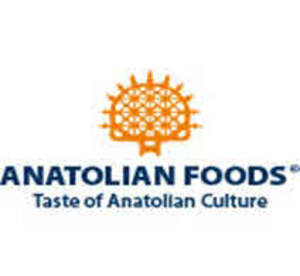

Trade Mark Journal No.2025/042 17 October 2025
UK00004274123 6 October 2025 (16,29,30,31,32,33,39)

- Class 16
- Printed recipes sold as a component of food packaging; Stencils for decorating food and beverages.
- Class 29
- Drinks made from dairy products; Food products made from fish; Fish (Food products made from -); Seafood products; Frozen meat products; Fish products being frozen; Processed meat products; Meat products being in the form of burgers; Meat, canned; Turkey products; Dairy products; Soups and stocks, meat extracts; Fresh meat; Milk products; Frozen eggs; Milk beverages; Yogurt-based beverages.
- Class 30
- Snack food products consisting of cereal products; Starch products for food; Snack food products made from cereals; Flavourings of tea for food or beverages; Snack food products made from rice; Bakery goods; Chocolate food beverages not being dairy-based or vegetable based; Flavourings of lemons for food or beverages; Snack food products made from rice flour; Edible gold for decorating food and beverages; Fruit flavourings for food or beverages, except essences; Snack food products made from maize flour; Snack food products made from soya flour; Snack food products made from rusk flour; Snack food products made from potato flour; Snack food products made from cereal starch; Snack food products made from cereal flour; Mixes for making bakery products; Beverages (Chocolate-based -); Tea beverages; Coffee beverages.
- Class 31
- Raw and unprocessed agricultural products; Raw and unprocessed forestry products; Raw agricultural products; Raw and unprocessed seeds; Unprocessed forestry products; Raw cereals [unprocessed]; Raw aquacultural products; Edible seeds [unprocessed]; Natural edible plants [unprocessed]; Unprocessed seeds; Hemp seeds, unprocessed; Unprocessed vegetables; Unprocessed wheat; Agricultural seeds; Plant residues (raw materials); Unprocessed oil seeds; Raw vegetables; Unprocessed edible seaweeds; Raw seeds; Unprocessed fruits; Unprocessed flax seeds; Unprocessed sorghum; Raw timber; Edible sesame, unprocessed; Raw grain; Unprocessed rice; Rice, unprocessed; Unprocessed cereals; Cereals (Unprocessed -); Raw fruits; Unprocessed potatoes; Raw corn; Unprocessed oats; Peanuts, unprocessed; Fresh fruits and vegetables.
- Class 32
- Beers; Non-alcoholic beers; Craft beers; Flavored beers; Low-alcohol beer; Non-alcoholic beer; Craft beer; Ales; Wheat beer; Ale.
- Class 33
- Wines; Fortified wines; Cooking wine; Liqueurs; Spirits [beverages]; Cordials [alcoholic beverages]; Alcoholic beverages of fruit; Alcoholic beverages (except beer).
- Class 39
- Transport of food; Storage of food; Packaging of food; Refrigerated transport of food; Food delivery; Packing of food products; Packaging and storage of goods; Food transportation services; Food delivery services; Packing of goods in containers; Frozen food storage services; Packing of food; Packaging of products; Refrigerated transport of frozen goods.
ANATOLIAN HOLDINGS LTD